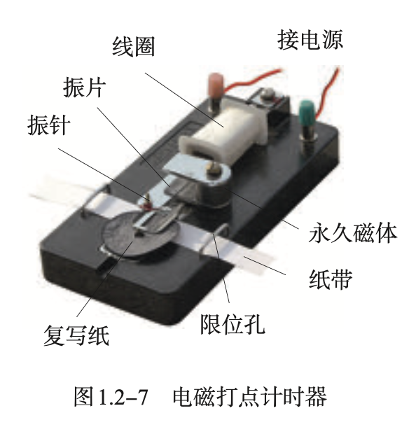

初高中物理知识树
教材梳理:
问题：
- 如何描述运动？
测量：电磁打点计时器
匀变速直线运动
牛顿三定律 $\rightarrow$ 重力与弹力 摩擦力
公式：
$v = v_0 + at$
$s = v_0t+\frac{1}{2}at^2$
$v^2-v_0^2=2as$
实验：
- 探究小车速度随时间变化的规律——必修一 P37
- 探究加速度与力、质量的关系——必修一 P88
物理史：
伽利略利用逻辑推理说明了重物与轻物下落得同样快，推翻了亚里士多德重物下落比轻物快的错误观念；制作了天文望远镜凭借观测结果支持日心说。他把实验和逻辑推理（包括数学演算）和谐地结合起来，于 1638 年出版了《两种新科学的对话》，奠定了作为近代力学创始人的地位。
定义
可以忽略物体的大小和形状，把它简化为一个具有质量的点，这样的点叫作质点（mass point） 。 ——必修一 P12
描述一个物体的运动，用来作为参考的物体叫作参考系（reference frame） 。——必修一 P14
路程（path）是物体运动轨迹的长度。——必修一 P16
由初位置指向末位置的有向线段是位移（displacement）——必修一 P16 （引入矢量概念）
位移与发生这段位移所用时间之比表示物体运动的快慢，这就是速度（velocity）。在国际单位制中，速度的单位是米每秒， 符号是 m/s 或m·s-1。——必修一 P21
物体在时间 Δt 内运动的平均快慢程度，叫作平均速度（average velocity） 。c——必修一 P22
当 Δt 非常非常小时，运动快慢的差异可以忽略不计，此时，我们就把 Δx/Δt 叫作物体在时刻t的瞬时速度（instantaneous velocity）。瞬时速度的大小通常叫作速率（speed）。——必修一 P22
物理学中把速度的变化量与发生这一变化所用时间之比，叫作加速度（acceleration） 。通常用 a 表示。若用 Δv 表示速度在时间 Δt 内的变化量，则有 a＝Δv/Δt。在国际单位制中，加速度的单位是米每二次方秒，符号是 m/s2 或 m·s-2。——必修一 P27
沿着一条直线，且加速度不变的运动，叫作匀变速直线运动（uniform variable rectilinear motion）。 ——必修一 P39
物体只在重力作用下从静止开始下落的运动，叫作自由落体运动（free-fall motion）。——必修一 P48
物体自由下落的加速度叫作自由落体加速度（free-fall acceleration），也叫作重力加速度（gravitational acceleration） ，通常用 g表示。——必修一 P49
物体间的相互作用是力（force）。——必修一 P56
由于地球的吸引而使物体受到的力叫作重力（gravity），单位是牛顿，简称牛，符号用 N 表示。——必修一 P57
物体所受重力效果上看来的的集中作用点叫作物体的重心（center of gravity）。——必修一 P58
物体在力的作用下形状或体积会发生改变，这种变化叫作形变（deformation）。发生形变的物体，要恢复原状，对与它接触的物体会产生力的作用，这种力叫作弹力（elastic force）。——必修一 P59
物体在发生形变后，如果撤去作用力能够恢复原状，这种形变叫作弹性形变（elastic deformation）。如果形变过大，超过一定的限度，撤去作用力后物体不能完全恢复原来的形状，这个限度叫作弹性限度（elastic limit）。——必修一 P60
在弹性限度内，弹簧发生弹性形变时，弹力 F 的大小跟弹簧伸长（或缩短）的长度 x成正比， 即F ＝ kx，这个规律叫作胡克定律（Hooke’s law） 。式中弹力F、弹簧伸长（或缩短）的长度 x 的单位分别是牛顿（N）、米（m），k 叫作弹簧的劲度系数（coefficient of stiffness） ，单位是牛顿每米，符号是 N/m。——必修一 P61
两个相互接触的物体，当它们相对滑动时，在接触面上会产生一种阻碍相对运动的力，这种力叫作滑动摩擦力（sliding frictional force） 。滑动摩擦力的方向总是沿着接触面，并且跟物体相对运动的方向相反。滑动摩擦力的大小跟压力的大小成正比。Ff ＝ μF压，其中，μ 是比例常数， 叫作动摩擦因数（dynamic friction factor） 。——必修一 P63
相互接触的两个物体之间只有相对运动的趋势，而没有相对运动，所以这时的摩擦力叫作静摩擦力（static frictional force） 。静摩擦力的方向总是跟物体相对运动趋势的方向相反。——必修一 P65
物体间相互作用的这一对力，通常叫作作用力（acting force）和反作用力（reacting force）。作用力和反作用力总是互相依赖、同时存在的。——必修一 P68
两个物体之间的作用力和反作用力总是大小相等， 方向相反， 作用在同一条直线上。这就是牛顿第三定律 （Newton’s third law）。——必修一 P69
假设一个力单独作用的效果跟某几个力共同作用的效果相同，这个力就叫作那几个力的合力（resultant force）。假设几个力共同作用的效果跟某个力单独作用的效果相同， 这几个力 就叫作那个力的分力（component force）。——必修一 P72
我们把求几个力的合力的过程叫作力的合成（composition of forces） ，把求一个力的分力的过程叫作力的分解 （resolution of force）。两个力合成时，如果以表示这两个力的有向线段为邻边作平行四边形，这两个邻边之间的对角线就代表合力的大小和方向。这个规律叫作平行四边形定则 （parallelogram rule）。——必修一 P73
既有大小又有方向，相加时遵从平行四边形定则的物理量叫作矢量（vector） 。只有大小，没有方向，相加时遵从算术法则的物理量叫作标量（scalar）。——必修一 P75
在共点力作用下物体平衡的条件是合力为 0。——必修一 P76
物体怎样运动而不涉及运动和力的关系的分支，叫作运动学（kinematics）；研究运动和力的关系的分支，叫作动力学（dynamics）。——必修一 P82
一切物体总保持匀速直线运动状态或静止状态，除非作用在它上面的力迫使它改变这种状态。这就是牛顿第一定律（Newton’s first law） 。物体这种保持原来匀速直线运动状态或静止状态的性质叫作惯性（inertia） 。——必修一 P85
描述物体惯性的物理量是它的质量（mass） 。质量只有大小，没有方向，是标量。在国际单位制中，质量的单位是千克，符号为 kg。——必修一 P86
如果在一个参考系中，一个不受力的物体会保持匀速直线运动状态或静止状态，这样的参考系叫作惯性参考系，简称惯性系。以加速运动的纸为参考系，牛顿第一定律并不成立，这样的参考系叫作非惯性系。——必修一 P87
实验

实验器材

实验图